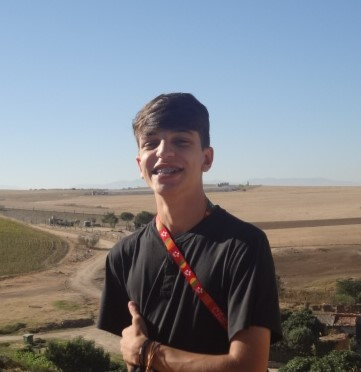

Ângelo Cordova Portfolio

Summary
Software Engineering student at the Brasília University, proficient in Python, Html and CSS.
Currently deepening my knowledge of programming to become a full-stack developer with JavaScript,
apply and expanding my abilities to collaborate on innovative projects.
Education
- Complete High School Education, Centro de Ensino Médio Setor Oeste (January 2021 to December 2023)
- Complete English Especific Course, Centro Interescolar de Línguas 01 de Brasília (January 2021 to December 2023)
- Bacharel of Software Engineering, Universidade de Brasília (January 2024 - Current)
Work Experience
-
IBT Nutri / Administrative Assistant (April 2021 to November 2021)
Helped to welcome clients and develop public and communicative
managing social networks. Used Adobe Photoshop to
posts and other social communication services.
-
NutriSutil / Marketing Strategist and Administrative Assistant (August 2022 to February 2024)
Generated revenue growth for the company of approximately
600% in 2 days using Google ADS and Facebook ADS. Worked as
copywriter, social media and videomaker, mastering tools from the
Adobe package (Photoshop, Illustrator, Audition and Premiere).
-
Didaticus Aulas Particulares / Teacher (August 2024 to February 2025)
As a private tutor, he has taught subjects related to the exact sciences
for all levels of education, including: elementary school I,
elementary school, high school and college.
Skills
- Coding: ⭐⭐⭐⭐
- Comunication: ⭐⭐⭐⭐
- Organization skills: ⭐⭐⭐⭐⭐
- Microsoft Office: ⭐⭐⭐
- Adobe Tools: ⭐⭐⭐⭐
Awards and Certifications
- Algorithm and Computer Programming (Python) - Brasília University (June 2024)
- Object Orientation (Python) - Brasília University (November 2024)
- Método Tráfego de Elite (Marketing Course) - Hotmart (February 2025)
- Vida de Designer - Desginer Hub (November 2023)
Contact Me
My social page (Touch here)